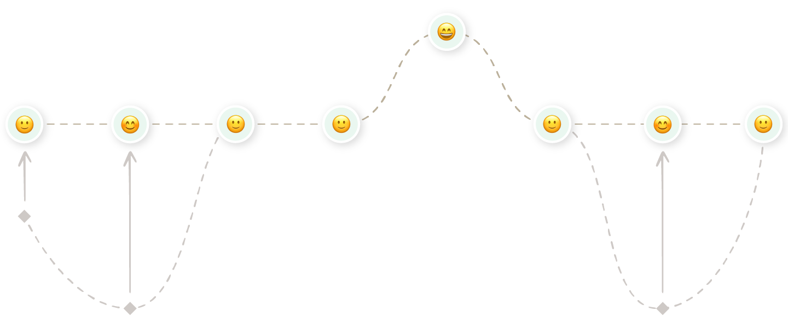

Background
Hey, can you feel that? You got a fuzzy feeling in your soul. One full of freedom and rebellious optimism kickstarting your appetite for escapades.
Can you picture it? You’re sitting pool-side with a margarita in one hand. A sunset completes your view while you relax after an adventurous trek in a place you barely know.
Snap back to reality for a second. You’re going on holiday and you can hardly wait. Look at you! “Hotel, check. Sightseeing reservations, check.” At this point you’re running a mental checklist on the daily.
“Oh no…I totally forgot about the flights.” People nowadays are used to dealing with transport arrangements without a hand from travel agents. They don’t mind juggling several plans into a meaningful trip by themselves. Lucky for them, the websites of airlines today provide the flexibility and convenience of an agent for less than their regular commission.
The Challenge
Airlines still want an extra buck. Monetization efforts on their part have cluttered the core of their service offerings with partnered add-ons and benefits. That leaves users overwhelmed. They lack the headroom and patience to deal with confusing websites in their holiday arrangements.
With that perspective, I'm taking you on an adventure to investigate where today's big airlines are falling short in the customer journey. You'll get to see how I utilized the complete design process to strengthen the user experience (UX) while maintaining their business case.
A Typical 9 Step Journey
Back to your frantic search for flights:
- You have your destination and date range in mind, but you find yourself clueless regarding the airlines that can take you there and back. This moment has you rushing to the likes of Skyscanner. Flight aggregators are your best friend when searching all possible flight combinations between two locations.
- Research on Skyscanner quickly culminates once you pick a flight that suits you. However, rumour has it that aggregators charge its own commissions on bookings. You switch websites, navigating to your airline’s counterpart. It’s a small hassle you think will save you money.
- You arrive on the landing page and are ready to search. Nothing to bug you now, except the premature offerings of car rentals & accommodation add-ons.
- Aha! You’ve spotted where to put your flight criteria. Meanwhile, you recall the departure & arrival locations of the flight you’ve previously settled on. It’s a positive experience at this stage. Bonus points when the website offers shortcuts to speed up your search.
- Picking your holiday time period is just as easy. Your intuition takes over the moment you see a familiar date picker pop up to save you the typing.
- You finish inputting your criteria by selecting the number of people flying with you. Light work so far.
- And your positive experience slowly peaks at the stage of comparing the flight results shown on screen. You’re looking for the flight that matches the one you saw on Skyscanner. It takes a few minutes, but it’s not too burdening. Orderly presentation of varied data points at a glance keep your momentum going. You select the flight that matches your needs.
- That momentum immediately goes downhill. By now you look at your flight’s travel classes in desperation. Wading through their different perks and price points, you slowly arrive at a decision regarding the best value for money. You might compare a few times between flights, which is not easy. Nothing points clearly how to trace back a few steps or keep going with your booking.
- Phew. You made it through that jungle! The horizon lights up as you advance to the last stages of the booking process. A neat reminder illustrates the flight selections you made right before payment. Are you happy with your picks? You’re free to pay using your payment method of choice.
Sometimes I hate when you go onto Aer Lingus but flights [are shown] through something else.
— user commenting on results, promoted by search engines, that create friction when browsing for their aggregators and/or airline websites
I like to see the calendar clearly for me, it’s very similar to my MacBook, the way I can have the calendar set up that I can see the whole month.
I didn’t have to click into it to look for the price.
Why don’t I have that as an option? If it’s not an option, why tell me that I can’t have it if it’s not there.
— user commenting on sold-out travel classes showing despite their unavailability
All the information is clearly handed to me, very understandable…I like this layout.
Behind the Journey
What you just read puts into view the typical customer journey. The average user faces an experience along those lines. Extensive research across several sources backs it up.
My research initially started with a Competitive Benchmark. From the onset of the project I had been curious of one thing specifically — how other transatlantic airlines approach the design of their websites. A thorough investigation of four airlines helped me identify established design conventions. Not to mention examples of best and lacking practice too.
Although secondary research can only take you so far. I was keen to contextualize my findings through real interactions with target users. That opportunity came through a Depth Interview paired with a Usability Test. In one week I set up, moderated, and recorded a session for the sake of collecting richer insights about existing websites.
To top it all off, I had access to two additional recordings of separate test sessions. They were kindly provided to me by the UX Design Institute — while undertaking this project as part of my Professional Diploma in UX Design.
Framing & Solving the Problem
A lot of research for a lot of insights. I drew affinity from 241 different research points to empathize with the user & further motivate this project.
I then asked myself, “What would it look like if I took all of the low points in this journey and elevated them?”
This process enabled me to step back, see the big picture, and identify potential areas for growth and improvement.
Keeping Within Conventional Bounds
All airline websites follow conventions to a degree. For good reason too — users know what to expect when embarking on a booking journey. I wanted to fit within the existing mental models to leverage that sense of familiarity.
This was instilled across all levels: from the bare bones of the IA down to the more embellished designs of screens & interactions.
Minimizing the Obstrusive
Know the rules well enough, and you can break them. Even these conventions offer wiggle room for consolidating UX in the context of airline websites.
I was shocked to see today’s websites clutter the users’ minds from the get-go. The landing page welcomed them with too many calls-to-action and promotional offers conflicting for the user’s attention. By Hick’s Law, the time it takes to make a decision increases with the number & complexity of choices. You don’t want the user to wait before getting into the booking flow — they haven’t invested time nor effort, so you may lose them entirely at this stage.
I pushed my minimalist philosophy towards the design of the menu components too. Research showed how users frequently interact with several instances. It was a recurring element within the typical journey. I hence felt obliged to optimize it — for the sake of retaining user’s attention on the flow.
Promoting Flexibility
The real space for innovation came in the form of flexibility. Too many airlines have false faith in a user who knows what is doing & is certain of their actions. Their hypothesis translates into rigid websites that punish user mistakes through time or money.
Micro-conversions are sprinkled along the path to booking your flight. That's precisely where the big airlines don't strike too well in the Customer Journey.
Take the uncertainty of searching flights. A user can revise their flight of choice several times before making their final decision. In this time frame, they may:
- Leave the website
- Think it through the following day
- Revisit the booking the following day
Catering to such non-linear journey involves a certain level of flexibility being passed to the user. That makes the difference between a generalized service and one that caters to individual needs.
Baggage is another exemplary hot topic. And it’s a significant micro-conversion — getting the user set for purchasing their flight tickets. Users often don’t have a choice in the booking journey regarding their allowances, often being delayed till check-in time. That leaves room for human error, doesn’t it? Why not permit the well-prepared to handle their baggage allowances at booking?
Finish
Those are some noteworthy changes I made to elevate the customer journey. Just like you saw, I had taken my sketches of screens & interactions and brought them to life through an interactive prototype for desktop. Building it at a medium fidelity had placed my focus on nailing the flow, screen layouts, copy and key interactions.
Ending the Project
This would’ve been a good stage in the cycle to test the prototype with real users — especially if I was dealing with a real-life product. Having tried my hand at user testing earlier in the project, I skipped it in favour of a deliverable that would teach me something different for my UX diploma.
Annotating the prototype essentially ticked off the project as complete. Extensive effort across research, analysis, design and prototyping had completed the entire design cycle. That makes the product ready to be handed off to developers for building it.
Reflections
The project around Aerovanta came with lessons aplenty.
A big learning curve was experienced in the research stage. It was my first time learning how strategic you need to be to pick up valid data while keeping the interviewee unbiased. I picked up the art of asking the right customer questions in research.
The analysis stage came with its own learnings too. The data collected couldn’t go without some wrangling to derive insights. Through application I saw what it takes to analyse large volumes of unorganized qualitative data.
In another sense, this project marked the practical aspect of my Professional Diploma in UX Design. It took many months to dredge through the design cycle — I took the project at a slower pace to incorporate many learnings from my course lessons.
Hey, do you want to hear the full story?
I only shared the 5-minute version of this story. If you want the finer details and how they can relate to your business, let's do it over an interview where I can give you the full presentation.